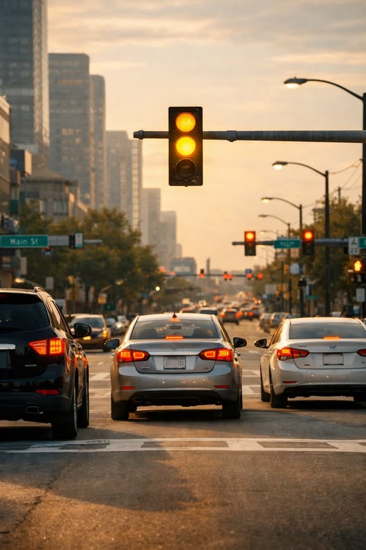

Flashing Green Before Yellow: A Proposal for Safer, Less Stressful Intersections

Terra Nova Development · Article #147
A proposed advance warning phase for traffic signals
The Need
Driver Stress and Decision Time
A steady green signal does not tell approaching drivers when it will end. When the signal changes to yellow, drivers must make a rapid stop-or-proceed decision. A brief flashing-green phase could give drivers advance notice and may help reduce abrupt braking, rear-end collisions, and the stress of approaching busy intersections.
International Precedent
Flashing-green indications and signal countdown systems have been used in some jurisdictions outside the United States, including parts of Mexico and Europe. Their design, legal meaning, and measured safety effects vary by location. Any claims of fewer hard stops, smoother traffic flow, or improved pedestrian awareness should be evaluated against published evidence before adoption.
Human Factors
A rhythmic flashing signal could serve as an intuitive warning that a change is approaching. However, drivers might interpret it differently, and the additional signal phase could affect decisions in unintended ways. Controlled testing would be needed to determine whether the warning improves safety.
The Feasibility
Technical Implementation
Many modern traffic controllers and LED signal heads have programmable capabilities. Depending on the equipment, adding a flashing-green phase might be possible through controller configuration rather than major hardware replacement. The actual cost, compatibility, signal timing impacts, and testing requirements must be assessed at each intersection; a universal cost below $100 is not established.
Regulatory Barriers
U.S. traffic signals are governed by the Manual on Uniform Traffic Control Devices (MUTCD) and applicable state rules. A new flashing-green indication would require review of its permitted meaning and potentially formal authorization for experimentation or changes to standards. A pilot should include public education, engineering review, and safety oversight.
A DFW Flashing Green Initiative
A regional pilot in the Dallas–Fort Worth area could begin with a small number of carefully selected intersections with relevant approach speeds and crash histories. Evaluation should compare conditions before and after implementation and, where possible, include similar control intersections.
Driver reaction times and stopping decisions
Hard braking and approach-speed measurements
Rear-end and other collision rates
Pedestrian and cyclist safety outcomes
Driver understanding and satisfaction surveys
The Broader Impact
If a pilot demonstrates safety and usability benefits, a flashing-green warning could become a relatively low-cost, human-centered improvement to existing traffic infrastructure. The objective is not merely faster traffic flow, but greater predictability and psychological comfort for people using the road.
The central proposal is straightforward: give drivers clearer advance information before the yellow signal appears, then test whether that information actually makes intersections safer.
Implementation Recommendation
Begin with a traffic-engineering feasibility assessment, confirm regulatory pathways, define measurable safety outcomes, and conduct a limited, independently evaluated pilot before considering broader deployment.